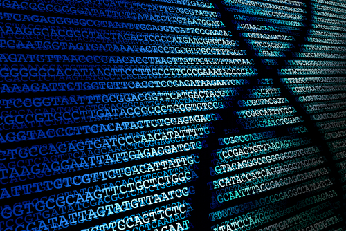
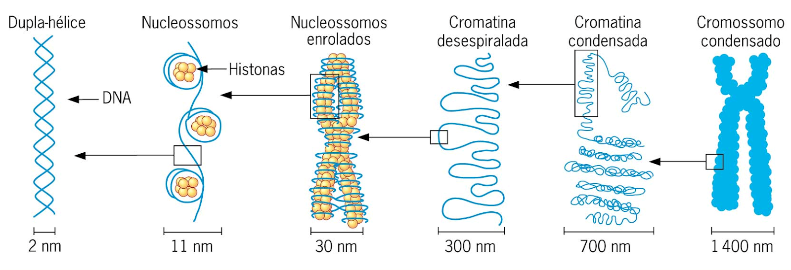
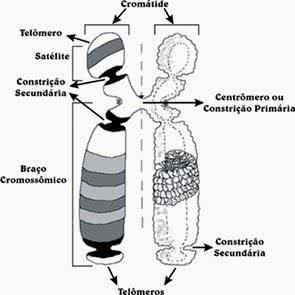
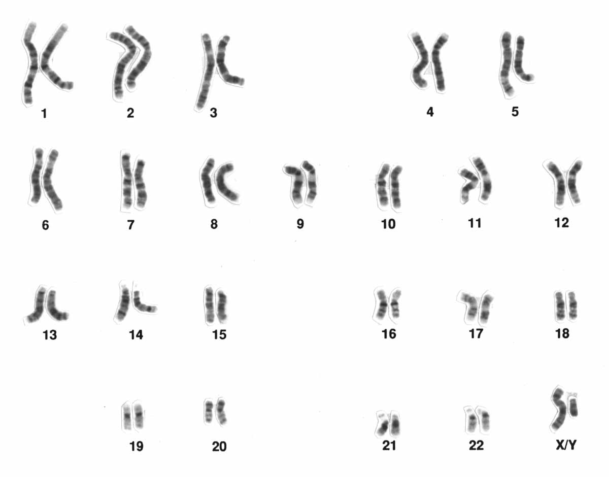
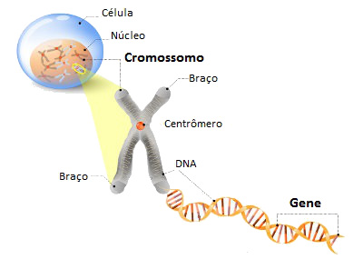
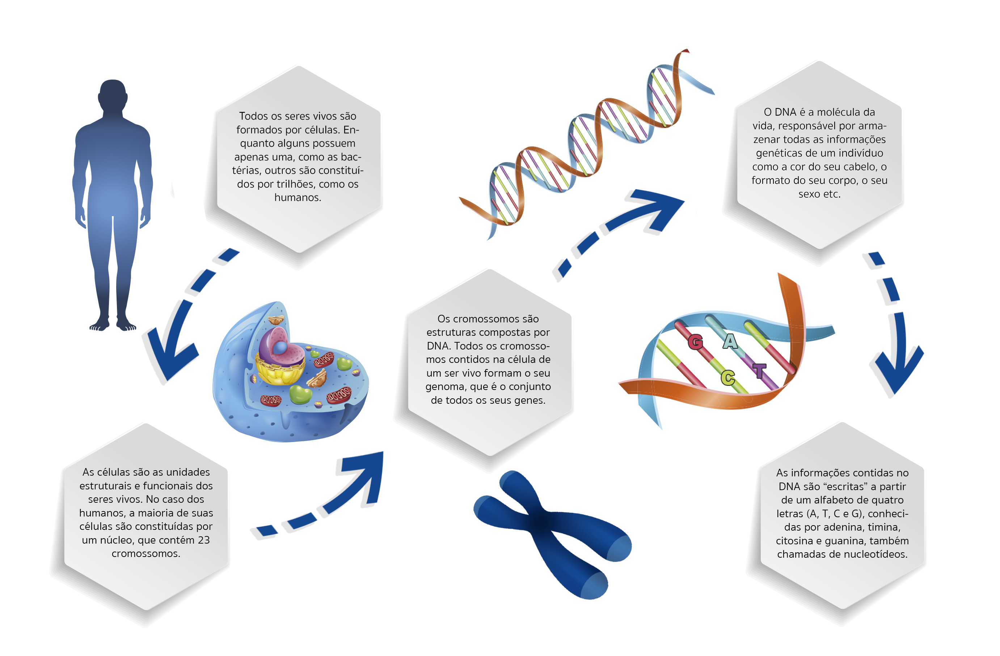

Cromossomo
O DNA é uma molécula muito grande, maior que a própria célula que o armazena. Por esse motivo, precisa ser compactado. A compactação começa com o enovelamento do DNA com histonas, formando nucleossomos e continua até formar cromossomos. Essa compactação, embora necessária, causa a redução do acesso ao DNA. A fim de resolver esse problema, a cromatina formada por DNA + histonas sofre modificações para expor determinadas partes do DNA, possibilitando a ocorrência, por exemplo, do reparo e replicação do DNA. A cromatina é denominada eucromatina quando o DNA está descondensado e heterocromatina quando DNA está condensado.

Do DNA ao cromossomo
Agora falando do cromossomo, ele possui as seguintes estruturas: telômeros, que são responsáveis pela proteção e replicação especializada das extremidades do cromossomo, e o centrômero que é responsável pela segregação correta após replicação.

Cromossomo
Cada célula possui um número característico de cromossomos. O ser humano, por exemplo, possui 46 cromossomos e é diploide, ou seja, possui duas cópias de cada cromossomo. Também, as células podem ser haploides, com uma única cópia, e estarem envolvidas na reprodução sexual como, por exemplo nos humanos, o espermatozoide e o óvulo.

Cariótipo
Gene
O gene é um segmento de DNA que inclui todas as informações necessárias e suficientes para a síntese de, pelo menos, um produto correspondente, que pode ser mRNA a ser traduzido em uma cadeia polipeptídica (proteína) ou outros tipos de RNA (tRNA, sRNA, etc).

Da célula ao gene
No genoma humano, os genes se encontram intercalados com sequências de DNA não codificantes e repetições. Um gene humano é formado por éxons e íntrons, sendo que os éxons constituem somente cerca de 1% do genoma humano. Cada gene especifica uma proteína diferente que pode ser, por exemplo, responsável pela catálise de reações bioquímicas (enzima), componente estrutural ou transportadora de substâncias.
Genoma
O Genoma é o conjunto de toda a informação genética e hereditária de um organismo, formada por sequências de DNA (ou, no caso de alguns vírus, de RNA), incluindo tanto os genes como as sequências não codificantes. O genoma de um organismo é uma sequência de DNA completa de um conjunto de cromossomos. O ser humano possui um genoma composto por cerca de 25.000 genes.
Da célula ao gene

Material de Apoio
Vídeos:
https://www.youtube.com/watch?v=UBfInkTvqt8 - Cromossomo
https://www.youtube.com/watch?v=IePMXxQ-KWY - Cromossomo
https://www.youtube.com/watch?v=5MQdXjRPHmQ - Gene
https://www.youtube.com/watch?v=-Vv3USW7iRU - Cromossomo, Gene, Genoma
Leituras recomendadas:
Capítulo 8. JAMES D. WATSON, et al. Biologia molecular do gene. 5a ed. Porto Alegre: ArtMed, 2006
https://jornal.usp.br/ciencias/genomica-a-ciencia-que-rompe-fronteiras-e-desafia-os-cientistas/